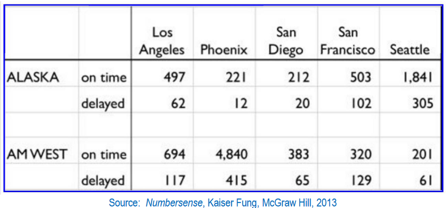
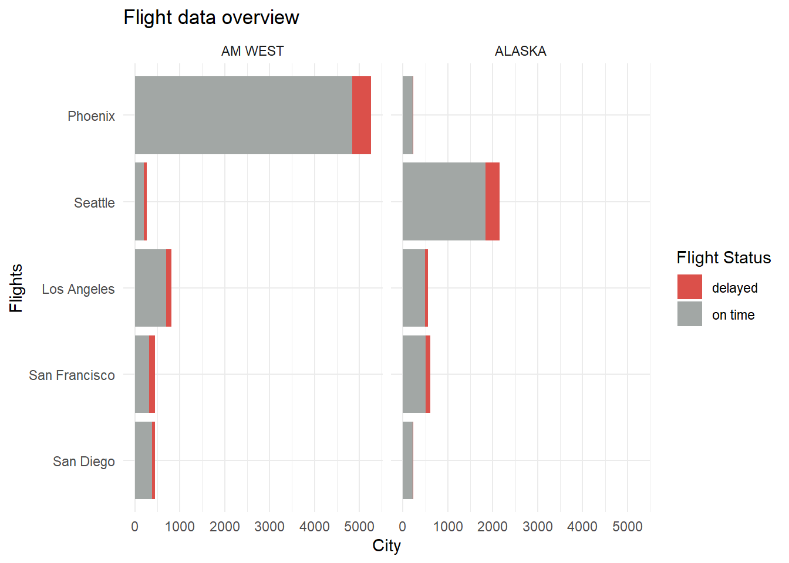
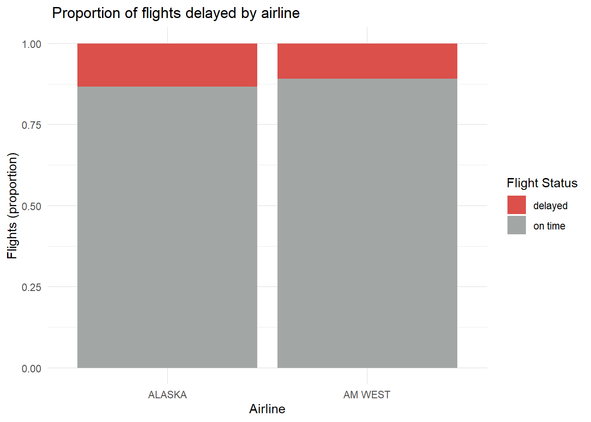
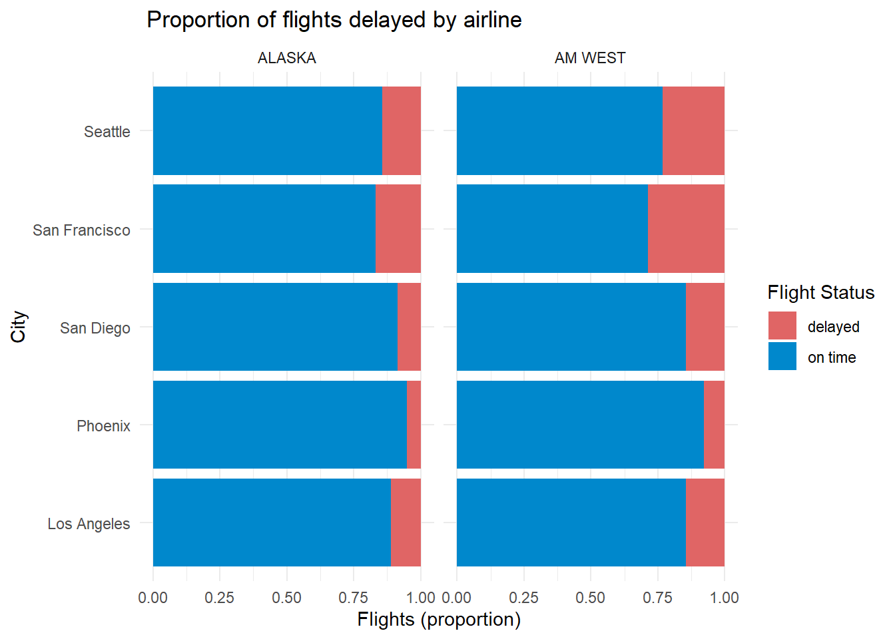

library(tidyverse)
library(knitr)Flight Delays
Introduction
Let’s analyze some flight data!
Our initial data is unfortunately only as an image, so we’ll start by recreating it using tribble and performing some basic clean up.
Then we’ll perform some exploratory data analysis to get an idea of delays for flights.
Our data contains on-time & delayed flight counts across two airlines and five cities on the West Coast.
Creating the data

# Create the data
df <- tibble::tribble(
~"", ~"", ~`Los Angeles`, ~Phoenix, ~`San Diego`, ~`San Francisco`, ~Seattle,
"ALASKA", "on time", 497, 221, 212, 503, 1841,
NA, "delayed", 62, 12, 20, 102, 305,
NA, NA, NA, NA, NA, NA, NA,
"AM WEST", "on time", 694, 4840, 383, 320, 201,
NA, "delayed", 117, 415, 65, 129, 61
)
kable(df)| Los Angeles | Phoenix | San Diego | San Francisco | Seattle | ||
|---|---|---|---|---|---|---|
| ALASKA | on time | 497 | 221 | 212 | 503 | 1841 |
| NA | delayed | 62 | 12 | 20 | 102 | 305 |
| NA | NA | NA | NA | NA | NA | NA |
| AM WEST | on time | 694 | 4840 | 383 | 320 | 201 |
| NA | delayed | 117 | 415 | 65 | 129 | 61 |
Our initial data isn’t too bad, but it is certainly not tidy. We’ll address this by dropping the empty row, renaming our columns, and pivoting the dataset longer to “flatten” it.
# Drop empty row, rename columns, fill empty cells, and pivot into long format
df <- df |>
rename("airline" = 1, "flight_status" = 2) |>
slice(c(-3)) |>
fill(airline) |>
rename_with(~ str_to_lower(str_replace(.x, " ", "_")), .cols = 3:7) |>
pivot_longer(3:7, names_to = "city", values_to = "flight_count") |>
arrange(desc(flight_count))
kable(df)| airline | flight_status | city | flight_count |
|---|---|---|---|
| AM WEST | on time | phoenix | 4840 |
| ALASKA | on time | seattle | 1841 |
| AM WEST | on time | los_angeles | 694 |
| ALASKA | on time | san_francisco | 503 |
| ALASKA | on time | los_angeles | 497 |
| AM WEST | delayed | phoenix | 415 |
| AM WEST | on time | san_diego | 383 |
| AM WEST | on time | san_francisco | 320 |
| ALASKA | delayed | seattle | 305 |
| ALASKA | on time | phoenix | 221 |
| ALASKA | on time | san_diego | 212 |
| AM WEST | on time | seattle | 201 |
| AM WEST | delayed | san_francisco | 129 |
| AM WEST | delayed | los_angeles | 117 |
| ALASKA | delayed | san_francisco | 102 |
| AM WEST | delayed | san_diego | 65 |
| ALASKA | delayed | los_angeles | 62 |
| AM WEST | delayed | seattle | 61 |
| ALASKA | delayed | san_diego | 20 |
| ALASKA | delayed | phoenix | 12 |
We now have a nice, flat, long formatted and tidy data set. We’ll export this to a new CSV file and continue on with some analysis!
write.csv(df, "output_data.csv", row.names = FALSE)Analysis
Let’s answer some basic questions.
We’ll start with a general overview of our data. Since it is a simple data set, we can visualize most of the features in one plot.
# Set this up so we can factor airline for our factor wrap
df |>
mutate() |>
# Plot data across two facets
ggplot(
aes(
x = flight_count,
y = reorder(
str_to_title( # Make city names pretty
str_replace_all(city, "_", " ")),
flight_count),
fill = flight_status)) +
geom_bar(stat = 'identity') +
facet_wrap(~factor(airline, c('AM WEST', 'ALASKA'))) +
labs(
title = "Flight data overview",
y = "Flights",
x = "City",
fill = "Flight Status"
) +
scale_fill_manual(values = c('#E06565', '#0088CC')) +
theme_minimal()
Compare delayed flights across airlines
We can see that out of the total flights, AM West covers a significant proportion, but the rate of delayed versus on time is roughly comparable between the two airlines (~5-6%).
df |>
group_by(flight_status, airline) |>
summarize(flights = sum(flight_count)) |>
mutate(prop = flights/sum(flights)) |>
subset(select=c("flight_status", "airline", "prop")) |>
spread(flight_status, prop) |>
kable()`summarise()` has grouped output by 'flight_status'. You can override using the
`.groups` argument.| airline | delayed | on time |
|---|---|---|
| ALASKA | 0.3889752 | 0.3371087 |
| AM WEST | 0.6110248 | 0.6628913 |
# Plot amount of delayed flights by city
ggplot(df, aes(x = airline, y = flight_count, fill = flight_status)) +
geom_bar(stat = "identity", position = "fill") +
labs(
x = "Airline",
y = "Flights (proportion)",
title = " Proportion of flights delayed by airline",
fill = "Flight Status"
) +
scale_fill_manual(values = c('#E06565', '#0088CC')) +
theme_minimal()
Compare delays across cities
San Francisco generally has the highest rate of delays for both airlines, especially for AM West. We can also see that Phoenix generally has the best rate of on-time flights.
# Calculate proportions within each airline-city group
df_proportions <- df %>%
group_by(airline, city) %>%
mutate(total_flights = sum(flight_count),
proportion = flight_count / total_flights) %>%
ungroup()
# Reshape the data to wide format with flight_status as columns
df_proportions %>%
select(airline, city, flight_status, proportion) %>%
pivot_wider(names_from = flight_status, values_from = proportion) |>
arrange(airline, city) |>
kable()| airline | city | on time | delayed |
|---|---|---|---|
| ALASKA | los_angeles | 0.8890877 | 0.1109123 |
| ALASKA | phoenix | 0.9484979 | 0.0515021 |
| ALASKA | san_diego | 0.9137931 | 0.0862069 |
| ALASKA | san_francisco | 0.8314050 | 0.1685950 |
| ALASKA | seattle | 0.8578751 | 0.1421249 |
| AM WEST | los_angeles | 0.8557337 | 0.1442663 |
| AM WEST | phoenix | 0.9210276 | 0.0789724 |
| AM WEST | san_diego | 0.8549107 | 0.1450893 |
| AM WEST | san_francisco | 0.7126949 | 0.2873051 |
| AM WEST | seattle | 0.7671756 | 0.2328244 |
ggplot(df, aes(y = str_to_title(str_replace_all(city, "_", " ")), x = flight_count, fill = flight_status)) +
geom_bar(position = 'fill', stat="identity") +
facet_wrap(~airline) +
labs(
y = "City",
x = "Flights (proportion)",
title = " Proportion of flights delayed by airline",
fill = "Flight Status"
) +
scale_fill_manual(values = c('#E06565', '#0088CC')) +
theme_minimal()
Analysis summary
In summary, despite the drastic difference in the overall number of flights, we can see that the airlines have similar delay rates to each other when compared in aggregate. However, that difference becomes far more meaningful when you evaluate it based per city, as we observed with San Francisco and Phoenix.
Conclusion
In this article we took a generated a simple dataset of flight data, tidied it into a proper long format for data analysis, then created visualizations to explore and understand how the rates of flight delays compare across airlines and cities.